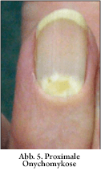
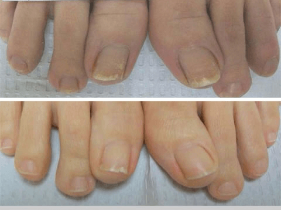

Tibetische Praktiken in der Behandlung von Nagelpilzen
Es gibt viele Legenden über die Wirksamkeit der Tibetischen Medizin. Ihre Entdeckungen auf dem Gebiet der Heilung sind wirklich einzigartig und unterscheiden sich grundlegend von den Praktiken jeder anderen Kultur. Die Zusammensetzungen der Medikamente sind vielfältig und überraschen mit einer unerwarteten Verbindung, außerdem ist alles, was im Rahmen der Tibetischen Medizin hergestellt wird, absolut natürlich. Das gilt auch für Antimykotika. Bei aller Vielfalt der Erkrankung bewältigen die tibetischen Praktiken erfolgreich jede Art von Pilznagel.
Nagelpilztypen
Es gibt 4 Haupttypen von Nagelpilzen:
Je nach Pilztyp wird die Infektion in 4 Gruppen eingeteilt:
Die distale oder distal-laterale Onychomykose ist die häufigste Form des Nagelpilzes. Von den Rändern der Nagelplatte dringt der Pilz unter das Nagelbett ein, wodurch der Nagel seine Farbe ändert, zerfällt und dünn wird.
Die proximale subungvale Onychomykose ist eine seltene Form des Nagelpilzes. Die Infektion tritt auf der Seite der Nagelhaut auf und bedeckt dann den Mond des Nagels. In diesem Fall erstreckt sich der weiße Fleck aus dem Mond-Bereich dann über den gesamten Nagel..

Die weiße oberflächliche Onychomykose - manifestiert sich in Form von weißen Flecken, Streifen auf der Nagelplatte, die von der Hinterwalze bis zum freien Rand reichen. Mit der Zeit werden sie größer und vergilben.
totale dystrophische Onychomykose zerstört die gesamte Nagelplatte, wodurch der Nagel stark verdickt wird, ändert seine Farbe und Form.

Nagelpilzbehandlung in Tibet
Die Pilzinfektion ist eine Krankheit, die extrem hartnäckig ist und eine längere intensive Behandlung erfordert. Traditionelle Salben und Cremes, deren Wirkung nicht länger als 10-15 Minuten nach vollständiger Absorption anhält, können den Behandlungsprozess monatelang hinauszögern, ohne den Erreger zu zerstören. In Tibet wird seit Jahrhunderten ein umfassender Ansatz zur Bekämpfung von Nagelpilzen angewandt. In einer Mischung aus Heilpflanzen getränkte Kompressen werden von den Patienten einen Monat lang kontinuierlich getragen, danach verschwindet der Nagelpilzerreger vollständig.
Heutzutage werden einige tibetische Medizinprodukte erfolgreich in die ganze Welt exportiert. Dazu gehören auch Antimykotika. - ist ein natürliches Präparat, das auf der tibetischen Praxis der Nagelpilzbehandlung basiert. Das creme bildet die alte Pilzbehandlungsmethode vollständig nach und ist ihre moderne Kopie. Die Formel, die von tibetischen Mönchen seit Jahrhunderten verwendet wird, wurde im Komplex nicht geändert und in ihrer ursprünglichen Form verwendet.
Es ist klinisch erwiesen, dass tibetische Heilmittel 5 mal effektiver bei der Behandlung des Pilzes sind als jede andere traditionelle Medizin.
Das creme hat eine 100% natürliche Zusammensetzung,
einschließlich folgender Komponenten:
1)Beinwellkonzentrat - ein natürliches Atybiotikum mit
antifungieller und wundheilender Wirkung.
2)Lapachoextrakt, der das Immunsystem stärkt, die
Durchblutung verbessert, Entzündungen lindert.
3)Reischi Pilz Extrakt beschleunigt den Prozess der
Gewebeheilung, stärkt den Prozess der Zellregeneration.
4)Bienenköniginnenfuttersaft hat eine besänftigende
Wirkung, beruhigt die Haut, heilt Hautrisse.
5)Granatapfelextrakt lindert schnell Juckreiz und
schmerzhafte Empfindungen.
6)Bergenienkonzentrat verbessert die Hautelastizität,
stellt den Wasserbilanz der Hautzellen wieder her, macht die Haut
weich.
Nagelpilz ist eine der schwerfälligsten Krankheiten, die meist unbemerkt bleibt. Die Vernachlässigung der eigenen Gesundheit hat jedoch oft die unangenehmsten Folgen. Mehr als 70% der mit dem Pilz infizierten Menschen, die die Krankheit verschleppt haben, verlieren ganz oder teilweise ihre Nägel. Kümmern Sie um sich selbst und seien Sie gesund!
Das creme ist heute eines der effektivsten Mittel zur Bekämpfung von Fußpilzen. Der Unterschied besteht darin, dass es neben den Symptomen der Mykose eine komplexe therapeutische Wirkung auf beide Problembereiche (Fuß und Nägel) hat. Das creme hat eine starke entzündungshemmende, antimikrobielle und heilende Wirkung, stärkt das Immunsystem. Seit kurzem empfehle ich es meinen Patienten sowohl zur Behandlung als auch zur Vorbeugung von Fußpilzen und ich bekomme schon positive Rückmeldungen über den Komplex.





 (Schätzen Sie ein)
(Schätzen Sie ein)